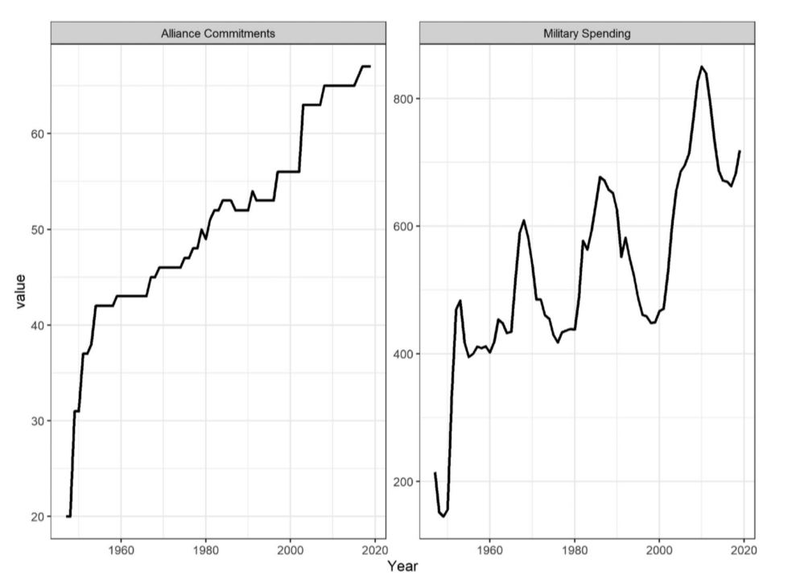
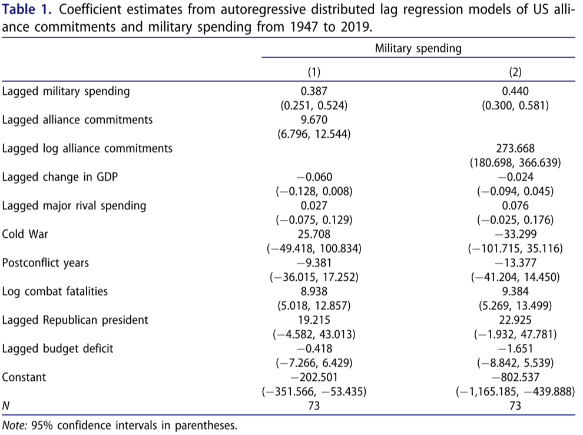
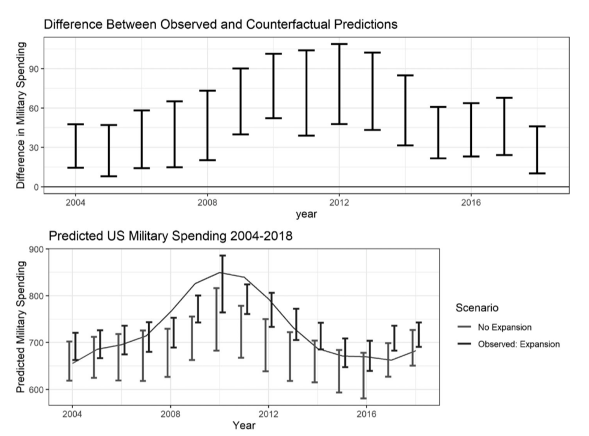

收录于合集

突破预算？美国军事同盟的财政支出
作者： Joshua Alley，佛吉尼亚大学博士后研究员；Matthew Fuhrmann，德克萨斯农工大学政治科学系教授。
编译： 肖龙（国政学人编译员，佛罗里达大学政治科学专业）
来源： Alley, Joshua & Matthew Fuhrmann.
2021. “Budget Breaker? The Financial Cost of US Military Alliances”. Security Studies 30:5, 661-690.
DOI: 10.1080/09636412.2021.2021280
导 读
本文主要探析了美国的同盟关系对其国防预算的影响。运用定量分析方法，作者们对文章一开始提出的问题提供了较为完整和清晰的答案。军事同盟关系是外交政策和安全研究等领域中的一个重要议题，且关于此问题的研究成果多是站在规范理论和话语分析等非量化方面的。究其原因，正是因为从公开的预算数据中很难将用于军事同盟上的投资从其他军费项目分开。不管其各种变量的选用是否准确，本文用较为浅显易懂的方法取得了较为肯定的答案，是关于同盟关系问题的一次有效尝试。对政策的分析和制定都有一定的理论和经验价值。
从本文的结论中，我们也可以瞥见到关于美国军事同盟的真正问题：同盟究竟是好是坏？换句话说，对美国而言，既然全球安全投入给美国的年度国防支出带来如此重的负担，美国到底是应该克制还是继续参与，又或是选择一条中间道路？为了全面地解答这个问题，我们必须将军事联盟的好处和坏处合并在一起观察。除了在财政上的净支出，联盟的确可以给美国带来许多好处：更加高效的力量投射、更快速的危机和冲突处理能力、促进和平关系等等。此外，联盟关系也给美国带来许多传统安全议题以外的利益，比如增进贸易和投资活动以及在政治和外交上的效果。本文仅仅从预算数据上对军事同盟的财政负担做了分析，但是却并没有观察其他方面，尤其是非传统安全方面由联盟关系带来的好处。
不过，我们不仅不宜夸大美国同盟的成本，也不宜夸大其利益。为了达到威慑敌人和提高联盟可信度的效果，美国在政策协调、军备、人员、海外基地以及军演等几个方面投入了大量资源。在未来，国际安全环境以及美国政策制定者们的个人观念等因素都会对美国的国防支出带去变化。因此，如同作者在文末所说，真正重要的问题并不是一个政府有多少基于条约的结盟承诺，而是应怎样维系同盟关系。对任何一个世界大国来说，如何高效地维持国际安全是一个值得持续探索的问题，而不应该因为成本问题便消除所有的同盟关系。
摘要
与他国的军事结盟如何影响到美国的军事支出？这一直是关于美国结盟价值和未来大战略的辩论的中心问题。一种思想认为，结盟需要许多军事投资来威慑第三方敌人并安抚盟友，且容易助长搭便车、鲁莽外交等行为，所以代价过高。另一种思想则认为结盟相对便宜甚至可以减少美国的军事支出，因为盟友可以提供关键的军事设施和安全保障，且结盟可以通过促进和平关系来减少军事投资的必要。本文通过观测从1947到2019年的美国军事预算数据，探究了历史上的军事同盟对于美国的财政负担。结果显示，虽然军事同盟的确为美国带来了许多好处，但从国防预算来看，同盟的代价是十分高昂的。
编译
01
导语
1796年9月19日，乔治·华盛顿在其著名的《告别演说》中告诫美国不要永久性地与其他国家结盟。美国领导人们一直到二战结束都忠实地遵循着这一思想。然而，1945年后的美国架构了诸如《美洲国家间互助条约》、北大西洋公约组织以及东南亚条约组织等各种多边组织。在冷战初期，美国给伊朗、日本、韩国以及菲律宾等国家提供了双边安全协议。在2020年3月，北马其顿加入北约，成为美国安全伞下的一员。今天，有近70个国家和地区处于美国的正式条约保护之下。
本文调查了安全承诺的财务后果。作者分析并测试了现有的关于美国同盟预算的两大理论。第一种是预算鹰派（Budget Hawk）思想，认为军事同盟将极大提高国防开支。比如，米尔斯海默（Mearsheimer）和沃特（Walt）等学者从 “账本底线” 出发，认为一个主打克制的大战略可以 “让美国的国防支出显著降低”。第二种被称为投机商人（Bargain Hunter）思想，坚定地认为美国同盟承诺是一种相对便宜的选择，并可以减少国防预算。其中，美国同盟减低（或仅仅轻微提升）国防支出的证据将显著弱化克制战略的主张，反之则可以大大增强该主张的可信度。
本文站在美国的角度来提供理论和分析，正是因为美国是其参与的众多军事联盟中最强大的成员和贡献者。运用建立动态回归模型，本文作者估计了自1945到2019年来，结盟承诺的变化是如何影响美国的国防预算的。分析发现，处于美国保护伞下的国家数量与其国防支出成正比。不过，作者们指出需要谨慎地解读分析结果，且因为研究样本过小，他们也无法确切地指出一个因果关系。因为分析结果持续且清晰地显示新的同盟承诺和国防支出之间的正相关，本文结论不可避免地支持预算鹰派的观点。
02
关于军事同盟支出的两大观点
1. 预算鹰派：美国同盟增加财政负担
许多美国学者和政治家都表达过这一派的观念。在1963年1月，肯尼迪总统曾私下对幕僚抱怨说北约盟友们正靠着享用 “土地上最美的食物” 过活，可是他的政府却在花大钱保护着欧洲。预算鹰派关于美国同盟的财政负担的论点有很多，大致可以被总结为以下几类。
· 保护的直接代价：防御联盟旨在威慑第三方攻击并保证盟友们可以在安全上依赖于其伙伴国。为了达到这个目标，拥有足够的军事实力是不够的，美国必须展示出足够的可信度以表明其在战争发生时将能及时介入。
· 军械和科技：美国必须发展和订购能够有效抵御威胁的军事技术和装备。美国与其盟友之间相距过远意味着美国需要相当大的军力投射能力。可这种能力是相当昂贵的。美国海军建造12艘哥伦比亚级弹道导弹潜艇的军备项目预计将花费超过1000亿美元；于2017年交付的第一艘福特级航母造价近130亿美元。空军也正在升级其陆基洲际导弹部队，预计将花费850到1000亿美元。
· 海外基地：美国在45个国家和地区有514个基地，其中大部分聚集在德国、日本和韩国境内。运用海外基地来调动军队和设备是一笔巨大的开销。根据2019年的国会预算办公室的一份报告，海外基地的平均年度开销比国内基地高出27%。非特殊情况下，海外基地每年可花费总共近1000亿美元。不过，各种海外基地对于保持美国威慑力和展现美国保护盟友的决心起着不可忽视的作用。
· 联盟协调：正如一个联合部队需要统筹合作才可以在军事上发挥客观作用，美国需要在各个盟友之间进行协调，诸如维持北约的文武官僚机构、军事演习、协助训练等。
· 抵消搭便车的行为：美国的盟友们经常通过减少军费来搭便车，迫使美国承担不成比例的提供安全的责任。军事联盟中的联合防御属于非排他性的公共产品，每个盟友不论贡献多少均有资格享用。因此，只要有美国的保护，盟友们可以安全地降低国防开支。就算美国领导人尝试克服这个问题，他们也需要支付额外费用。
·挽救鲁莽的盟友：盟友有时会鲁莽行动，将美国拖进不必要的军事冲突之中。如果有缺乏安全的盟友向第三方挑起攻击，美国将被迫进行昂贵的介入行动来帮助盟友脱困或化解争端。
2. 投机商人：美国联盟可以节省开支
这一思想派别提出了不同的看法：美国的联盟承诺可以节省开支，或者仅仅是略微提升国防支出。其中的主要论点大致有以下几点。
· 同盟可产生高效率：首先，投机商人派别驳斥了预算鹰派关于搭便车行为的批评。他们不认为军事联盟所产生的集体安全是一种非排他性的公共产品，因为美国的投入不可能对每个盟友都是均等的，且美国可以决定抛弃某个盟友。况且，还有证据表明搭便车行为其实并没有特别常见，大部分的盟友是有意愿做出可观的贡献的。美国的盟友也经常与其分工合作，与没有任何盟友相比，这对美国的财务底线是有好处的。比如在9/11之后针对阿富汗塔利班的持久自由行动（Operation Enduring Freedom）中，法国、意大利、英国和土耳其均为美国提供了军备和人员上的支持。另外，一些盟友可以为一部分美国海外基地的支出买单，并可为其提供各种支持服务。
· 冲突数量减少可以减轻美国财政负担：预算鹰派担忧军事同盟会将美国卷进冲突之中，相反，联盟也可以限制盟友。盟友们一般都会重视来自一个有核大国的保护，因此它们会积极致力于避免挑起军事冲突或采用带有威胁性的外交政策。另外，一个带有核武大国的军事联盟具有延伸性吓阻的效力，可以有力地促进和平关系。
· 联盟可信度不需要某些直接投入：预算鹰派认为一个军事联盟的可信度需要大量的成本，美国必须在军备、基地以及联合预警活动上花费数十亿美元才能使一个联盟拥有足够的震慑能力。然而，还有其他方式可以增加一个军事同盟的可信度，比如连结信号（hand- tying signal）以表示患难与共，或是签署正式防御条约以提供法律担保。况且，并非所有的联盟投入都需要类似北约的大量成本。预算鹰派在指出军事联盟的弊端时，常常用成本最高的同盟关系作为例子，但忽略了很多中等花费的联盟。
03
探寻真相：从国防预算上看美国军事同盟
1. 假设及预测
作者介绍的两大派别关于军事同盟的财政负担有着截然不同的看法。为了探寻军事同盟对于国防预算的真实影响，作者提出了以下两条假设。
假设①：预算鹰派假设。军事同盟的投入会抬高美国国防预算支出。
假设②：投机商人假设。军事同盟的投入不仅不会抬高，且会降低美国国防预算支出。
显而易见地，若军事同盟投入和国防支出之间存在无效关系（null relationship），我们则可以清楚地确认投机商人的观点是正确的。然而，就算是两者之间存在正相关，我们也不一定可以完全否定该观点。部分持有 “投机商人“ 观点的学者认为军事同盟投入对于国防支出的影响是中性的，因为其给美国财政带来的长远利益足以平衡短期成本。其他一部分的学者则论证说军事同盟带给美国的财政负担是相对较小的。因此，作者们必须同时考虑这两者之间的关系的方向和量级。
另外，数据分析的结果也可能证明这两大观点都在特定程度上是正确的。对于美国而言，军事联盟或许会提高在某些方面的支出，但是可以从其他方面帮助政府节省防御成本。这里，作者们分析的是军事联盟所带来的净效应。另外，军事同盟投入与国防支出之间的实质性正相关效应也不一定意味着投机商人假设是无效的，而仅仅证明美国军事同盟所带来的财政负担足以掩盖其节约成本的效果。
**
**
2. 数据及分析方法
美国的国防预算并没有将与军事联盟有关的支出单独标列出来。一些看似可以很快计算出来的数据，比如投入欧洲的人员和军备支出，并没有在预算中详细地列出来。因此，为了较为可信地测算与美国盟友相关的财政支出，作者们主要观察了历史上与美国有正式安全关系的国家数量。美国在1779年至二战之间都没有建立任何正式的联盟关系，直到二战之后才开始提供基于条约的正式保护。虽然世界范围内坐拥美国保护的国家数量大体上有所增加，但是有时也有下降，比如美国在1979年伊朗的伊斯兰革命后就不再给伊朗提供保护了。
运用关于1947至2019年美国军费支出的数据模型，作者们测算了美国军事联盟随着时间推移对于预算变化的影响。在数据收集上，作者 在“联盟条约义务和规定”数据库（Alliance Treaty Obligations and Provisions）中提取了与美国有保护协定的国家，并观察了在每一个国际安排中的国家数量的变化。作者又从斯德哥尔摩国际和平研究所中提取了美国的军事支出数据（以2011年美元价值为基准）。
借由描述性数据生成的线型图见图①。

图①：美国的正式联盟数量（左）和美国军事支出（右，以十亿为单位）
正式联盟数量和军事支出均在一定程度上随时间变化，因此作者们选用自回归分布滞后计量模型（ADL）对这两者之间的关系进行了估计。这其中，本文考虑了这个关系中的两种函数形式。第一，美国军事同盟的数量增加的同时，增添新盟友的边际成本会降低。比如说，当盟友基数为40时，增添盟友的成本会比基数为15时低。本文中的模型默认无论基数如何，增添盟友的成本大致相同。第二，作者们通过记录联盟承诺的数量放宽了这一假设，并随后将这一变量包括进了模型的滞后之中。此方法有助于帮助调查美国的军事联盟和国防支出之间的非线性关系。本文随后涵括的长期乘数界限检验则显示出在有记录的联盟承诺和军事支出之间有一个长期关系。然而，这个双模型方法的一个缺点便是对数联盟承诺系数很难有一个直观的解释。
另外，各种其他因素也可以影响这个关系。比如，国际威胁形式的变化也可以解释结盟活动中的变化和军费支出的增加。因此，作者对以下混杂变量进行了控制：战斗伤亡人数、主要敌对大国国防支出、冲突后年份、是否处于冷战年代、GDP变化、预算赤字、总统的党派（一般情况下，共和党总统更有可能是鹰派且对国际纠葛更加谨慎）。
04
分析结果
图②提供了从1947至2019年的美国国防支出的回归模型结果。其中，模型1（Model 1）用美国安全承诺的总数作为自变量，模型2（Model 2）则是基于关于联盟承诺的记录。可以看出，在两个模型中，联盟承诺变量的系数为正，95%置信区间均在0以外，证明联盟承诺与国防支出正相关。这一结果符合预算鹰派的预期，且无论作者将此关系模拟为线性（模型1）或是以边际成本递减为基础（模型2）。
根据模型1的结果，增加一个额外的安全承诺将使美国军费支出上涨97亿美元，95%置信区间为68亿到125亿美元之间。模型2的结果与模型1相比有较小的实质性影响，但仍然不可小视。10%的安全承诺增加意味着下一年的国防预算将上涨260亿美元，95%置信区间为172到349亿美元之间。为使读者对这个数字有概念，以联盟承诺的平均数51为准，10%的联盟承诺增加大致等同于增加5个盟友。
另外，因为军费支出水平的变化通常是长期的，所以一个新的联盟承诺的影响会在多年内扩散。本文使用长期乘数（long-run multiplier）来考察联盟承诺的滞后数量的提高对年度国防支出水平的最终影响。其结果为正。根据模型1，每增加一个联盟承诺，则年度国防预算平均增加110亿到210亿美元。模型2则估算10%的联盟承诺提高等于470亿的额外平均年度支出。
表②：自回归分布滞后计量模型结果

为了进一步说明回归分析模型的结果，作者仔细考察了北约在冷战以后的扩展案例。北约在冷战之后的东扩包括了2003至2004年间的三个巴尔干国家的成员国身份。那么，爱沙尼亚、拉脱维亚和立陶宛这三个前苏联成员国进入北约，对美国军费支出的影响是怎样的呢？
为了解答这一问题，本文随后进行了一个反事实分析。运用与前两个模型相似的回归分析办法，该分析模拟了两个情境：北约东扩囊括巴尔干三国的事实情境，与北约没有东扩的假设情境。在第二个情境中，作者们在其他因素保持不变的情况下去除了对巴尔干国家的盟友承诺。这让反事实数据中缺失了三个2004年后的盟友承诺。将前后两情境对比后可以计算北约东扩的预算成本。
图③清晰地显示了北约往巴尔干三国的扩张始终如一地导致了军事支出的增加。在2019年，事实情境和假设情景之间的差距超过了300亿美元。这些支出反映了针对北约基础设施和成员国支出的大量投资，例如用来支持部队训练、军备采购以及欧洲威慑倡议（European Deterrence Initiative）的支出。

表③：2004-2018年北约东扩：事实和假设情境对比
总的来说，以上分析结果为美国结盟行动对军备支出的影响提供了强有力的证据。在其他条件均等的情况下，增加一个美国盟友将给美国的国防支出增加数十亿的额外支出。这些证据与预算鹰派的观点保持一致，即与其他国家结盟将提高美国的军事支出。
05
讨论：美国同盟的财政支出
关于军事同盟的讨论一直以来在美国大战略和外交政策制定上占据重要地位，本文仅大致介绍两种主流观点：预算鹰派和投机商人派。为了验证这两种观点，本文作者设计了一个统计模型来测算美国同盟承诺是如何随时间推移影响到国防预算的，并根据需要控制了混杂变量。这种方法同时也兼顾了美国安全承诺成本中的一些难以直接测量的因素，比如延伸性吓阻带来的节约效应和用来弥补盟友搭便车行为的支出。
本文分析发现美国联盟承诺的增加与国防支出的提高成正比。不同分析模型均指出，额外的联盟承诺将为年度国防预算增加100到200亿美元的指出。若是将联盟对象的数量提高10%，则预算将每年增长360到680亿美元。在作者们使用的每一个模型中，联盟承诺的提高都与国防预算的大规模增长有关。作者们同时指出，虽然本文可以识别大致趋势，但是不可以显示某一个联盟承诺的真实财政负担。
总而言之，本文的结论与预算鹰派的观点大致相同。美国在全世界的保护承诺需要美国政府为此承担大量的财政负担。与宣扬“联盟可省钱”的投机商人思想相反，虽然各种联盟可以为美国带来名声和效率上的好处，但是它们带来的经济成本足以掩盖任何类似的效益。本文的分析结果支持美国外交政策中的“克制”派的观点，并弱化了“深度投入”派学者们的观点。在现有的证据下，同盟还是十分昂贵的。
词汇整理
预算鹰派 Budget Hawk
投机商人/讨价还价之人 Bargain Hunter
持久自由行动
Operation Enduring Freedom
无效关系 Null relationship
联盟条约义务和规定
Alliance Treaty Obligations and Provisions
长期乘数 Long-run multiplier
欧洲威慑倡议
European Deterrence Initiative
审校 | 房宇馨 聂涵琳
排版 | 任航奇 苏伊文
文章观点不代表本平台观点，本平台评译分享的文章均出于专业学习之用, 不以任何盈利为目的，内容主要呈现对原文的介绍，原文内容请通过各高校购买的数据库自行下载。

国政学人
支持学术公益与知识传播
微信扫一扫赞赏作者 __赞赏
已喜欢，对作者说句悄悄话
取消 __
发送给作者
发送
最多40字，当前共字
上一页 1/3 下一页
长按二维码向我转账
支持学术公益与知识传播
受苹果公司新规定影响，微信 iOS 版的赞赏功能被关闭，可通过二维码转账支持公众号。